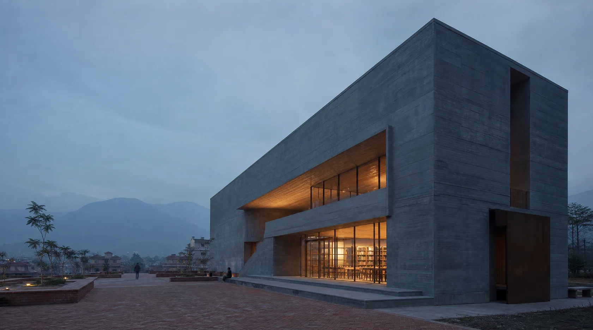
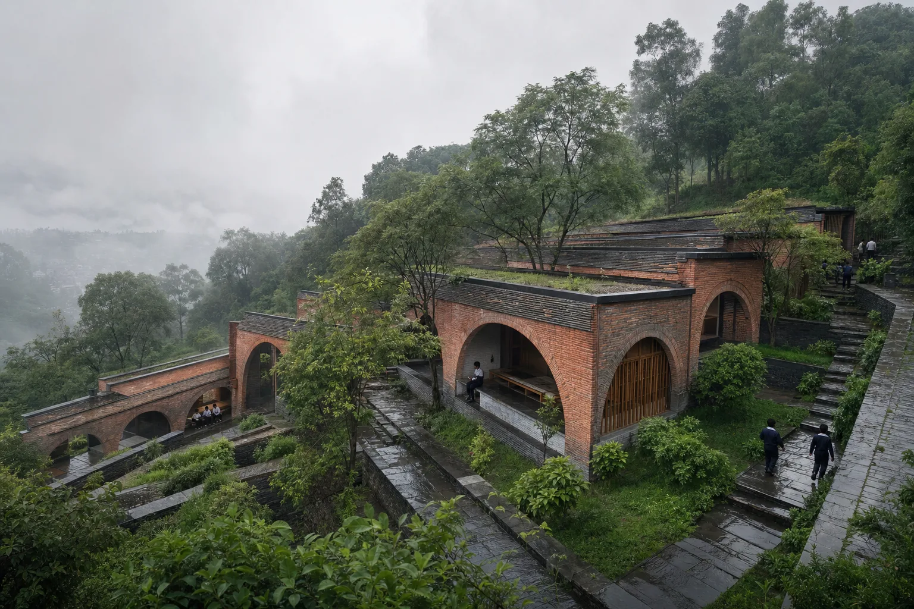
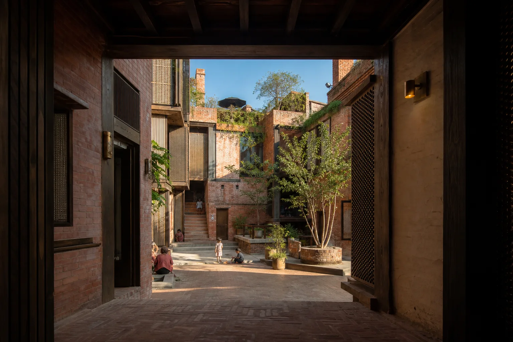
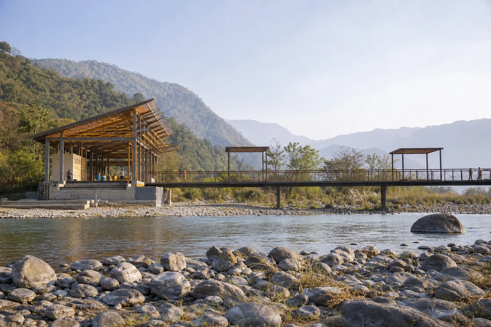
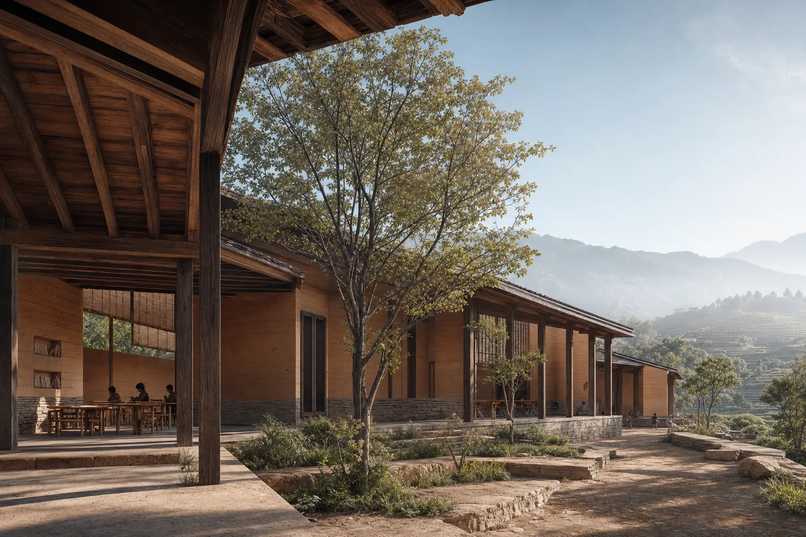
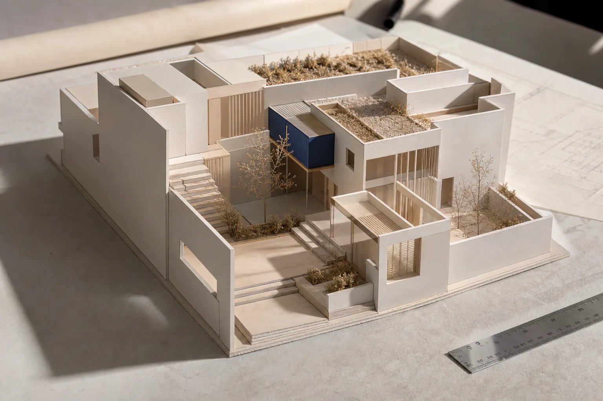

Room for Rain
A community library organized around a monsoon court. Deep concrete frames become shade, seating, and a slow transition from street to shared room.
Architecture student · Portfolio 2026
I’m Subekshya. I explore how climate, material, and everyday rituals can turn space into belonging.
Explore selected studies
Position
I’m interested in the quiet negotiations that shape a place: rain meeting a threshold, neighbors sharing a courtyard, light moving across a working surface. My practice starts by noticing, then drawing what could be.
Selected work
The project imagery and descriptions below are fictional presentation placeholders. They will be replaced with Subekshya’s own academic work.
A community library organized around a monsoon court. Deep concrete frames become shade, seating, and a slow transition from street to shared room.

A learning pavilion that refuses a single front. Terraces follow the slope, collecting informal classrooms between brick walls and monsoon gardens.

A compact housing study that repairs a shared court rather than replacing it. New rooms gather around the social heart of an existing brick fabric.
Project archive
Use this flexible archive for completed studio projects, competitions, measured drawings, model studies, and independent work.
Placeholder project Public / Learning · 2026
Replace with your strongest completed project and a one-sentence design idea.
Placeholder project Landscape / Education · 2026
Use this slot for a landscape-led studio or community project.
Placeholder project Housing / Reuse · 2026
Replace with housing, adaptive reuse, or urban design work.

Placeholder project Civic / Landscape · 2026
Use this slot for infrastructure, public realm, or environmental work.

Placeholder project Education / Earth · 2026
Replace with a material-led project, workshop, or design-build proposal.

Placeholder project Model / Process · 2026
Use this slot for physical models, detail studies, or representation work.
Working method
Each project moves back and forth between the measured and the felt.
Read the site through climate, movement, memory, and daily use.
Use plans, sections, and fragments to make relationships visible.
Test light, weight, and sequence through models and material studies.
Question the first answer and bring the project closer to lived experience.
Profile / CV
Replace these fields with your verified details before sending internship applications. Nothing below claims an institution, employer, award, or proficiency.
01
Add dates
Add degree, current year, and expected graduation.
Add dates
Add the provider and one useful outcome.
02
Add dates
Add studio, organization, role, and two measurable contributions.
Add dates
Add a team, responsibility, and what changed because of your work.
03
Add CAD, BIM, and 3D tools you can confidently demonstrate.
Add rendering, graphics, photography, and layout tools.
Add model-making, fabrication, drawing, or site skills.
Add languages and honest proficiency levels.
Add verified exhibitions, publications, scholarships, or awards.
Add a final PDF résumé link when the content is ready.
About
I’m Subekshya, an architecture student seeking an internship where I can learn through careful observation, rigorous drawing, and collaborative making.
This short biography, education, skills, and résumé will be updated when final content is provided.
Start a conversation
Placeholder email — replace before applications.
Portfolio currently uses fictional concept studies while Subekshya’s work is prepared.
Return to work